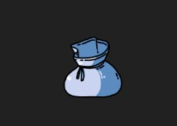
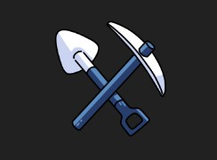
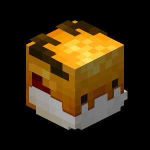
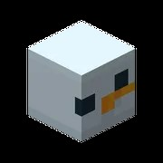
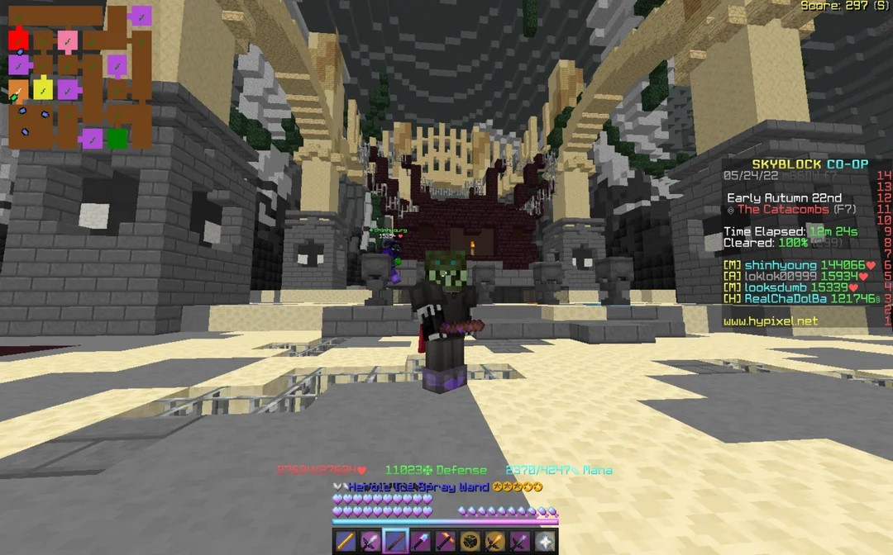
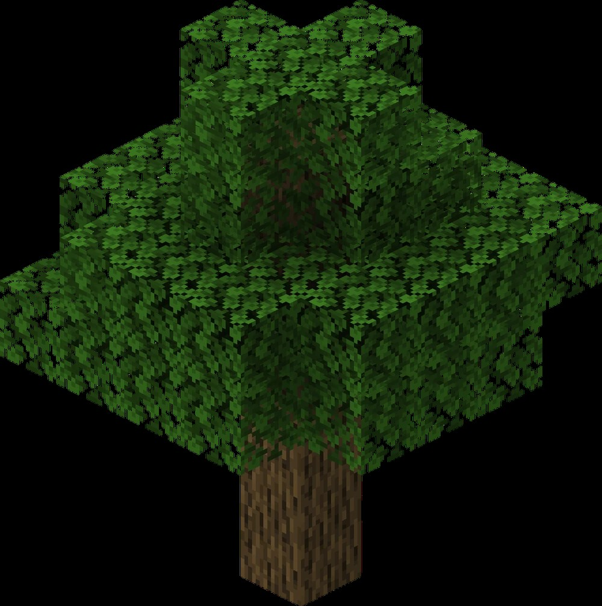

Le skybloconaise expliqué par mes soins
En raison de mon faible niveau en code ce wiki ne sera pas complet evidemment.
Seules les catégories Donjons et Foraging seront réalisées par mes soins.
( je ferais peut-être la suite plus tard )
Collections :

Liste non exhaustive des collections dans le skyblock.
S'augmentent par les minions, ou par soi-même,
permettant de débloquer différents crafts et
d'obtenir / utiliser plus d'objets dans le jeu.
Skills :

Compétences à augmenter au fil du jeu.
Combat, Farming, Mining, Foraging ?
Multiples classes à augmenter et permettant d'obtenir
du meilleur stuff, ou d'avoir plus de stats.
Pets :

Animaux de compagnie donnant des stats.
En fonction des types de pets, des stats associées
à la catégorie seront ajoutées :
Pour le combat, de la strength par exemple. Sur l'image, le pet est :
Le Golden Dragon :
Il donne des stats de combat (mais il coûte cher.)
Différents pets existent pour un même type :
l'ender dragon est aussi un bon pet de combat ;)
Minions :

Workers for toad's industry.
Employés pour toi, ils minent, farment, pêchent,
ou tuent la collection associée.
Sur l'image, c'est un merveilleux SNOW minion
qui mine de la neige (et oui).
Sympa, hein ?
Talismans :
Equipements donnant des stats supplémentaires.
Obtenables par différentes quêtes, certains crafts
ou encore des drops !
Yippiiiii
Donjons :

Zone de combat contre différents boss séparés
par des floors > niveau de jeu avancé.
Cette catégorie est la seule avec la foraging
Update réalisée par mes soins.
JAI PAS LE TEMPS.
Foraging Update...

Skill spécifique du jeu délaissé lamentablement par
ses développeurs (L bozo). Impossible à monter et rien à gagner.
Mise à jour attendue par les nombreux joueurs
pour permettre de casser du bois tranquillement par pitié.